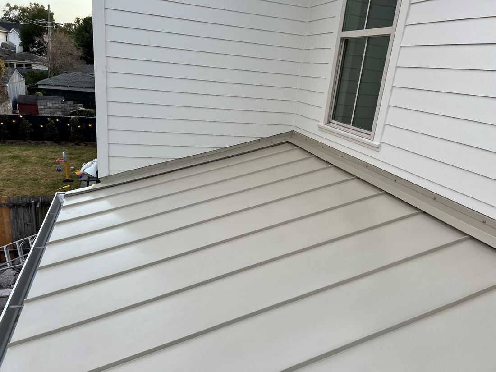
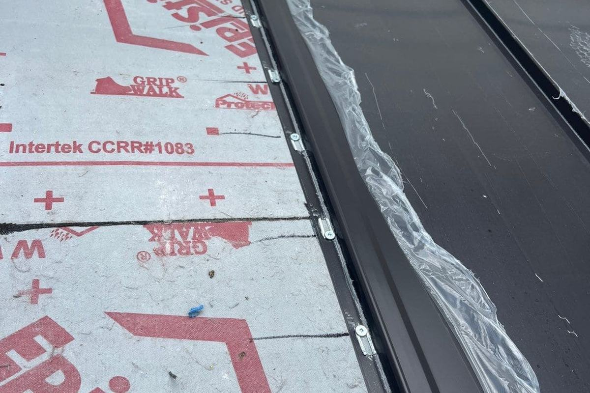
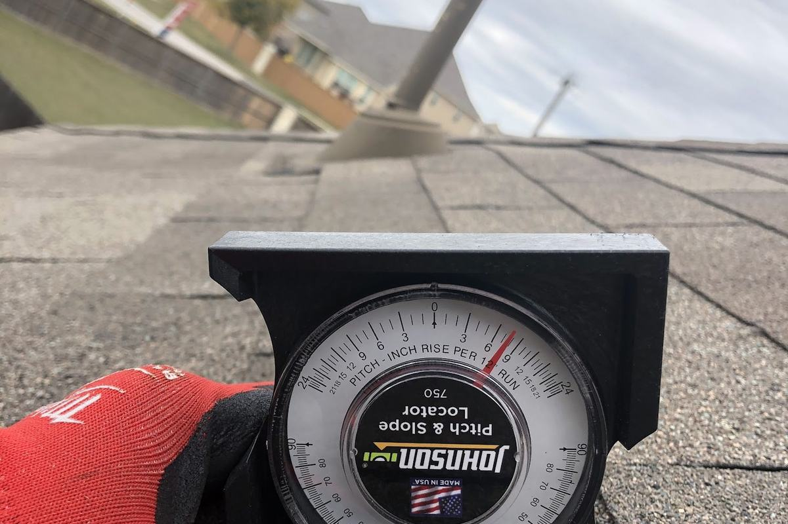
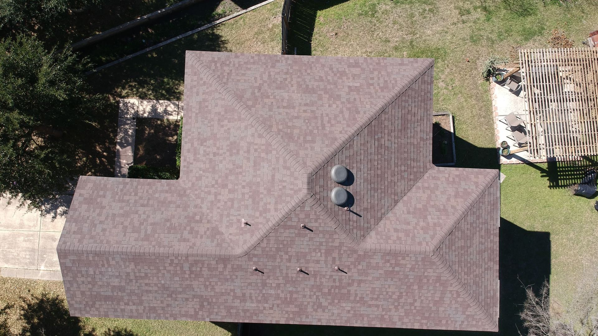

It Lets the Attic Breathe
Vented soffit is the intake side of your attic. Break that path and hot, humid air has nowhere to go but into your deck.
Rotted soffit is a symptom, not the problem. We find what is causing it, fix that too, and put back vented panels sized for the attic they are serving.
Soffit is the panel that closes the underside of your roof overhang. Most people never think about it until something goes wrong, and by then it has usually been wrong for a while.
Damaged soffit is almost always a symptom. Water is getting in somewhere above it, or the attic cannot breathe, or both. Replacing the rotted panel without finding the cause just means doing the same job again in two years, which is why we open enough to see the real extent rather than covering it back up.
We handle soffit across New Orleans and 13 surrounding cities, usually alongside the fascia, the gutters and the attic ventilation, because on most houses those four things failed together and there is no sense fixing one of them.
Vented soffit is the intake side of your attic. Break that path and hot, humid air has nowhere to go but into your deck.
The overhang protects the top of the wall. Once soffit fails, water runs into the structure instead of off the edge.
A gap is an open door for squirrels, birds, wasps and rodents. In New Orleans it does not stay unnoticed for long.
Soffit rarely fails on its own. Pick the one that sounds like your house, or call and describe what you are seeing from the ground.
Each of these has its own page with more detail. Or skip the reading and ask a roofer:
Talk to a roofer504-229-3955
Where the damage is contained and the framing behind it is still sound, a repair is the right answer. We open enough to see the real extent first. If what is behind the panel is worse than what is in front of it, you will hear that before we start putting things back.

Where rot has taken hold, panels get replaced rather than patched, and they get replaced with vented panels sized properly for the attic they are serving. Undersized intake is one of the most common ventilation faults we find on New Orleans homes.

The board behind the gutter, and where rot usually starts on a New Orleans house. It carries the gutter, so once it goes soft the gutter starts pulling away, which puts more water into exactly the place that is already failing.

Soffit is only half of it. Air enters low through the soffit and leaves high through ridge or roof vents, and the two have to be balanced. Plenty of ridge vent with blocked or undersized soffit intake does very little except look like ventilation.
Everything is written down before a panel goes back on, including what we found once it was open.
Rotted soffit is the end of a story that started somewhere else, usually a leak above it or an attic that cannot breathe. We look for that first. Replacing the panel without finding the cause just means doing the job twice, and you paying for it twice.
The panel is the symptom. We want the cause.
Enough of the run comes down that we can see how far the damage actually goes and what condition the framing behind it is in. This is the step that gets skipped when somebody quotes a soffit repair from the driveway.
No quoting from the ground, and nothing covered back up.
A written estimate for what is actually there, not for what was visible from below. If opening it up changes the number we tell you before we go further, with photographs of what we found.
If the number changes, you hear it before the work does.
Panels go back vented and sized for the attic they serve, balanced against what the ridge is exhausting. Fascia repaired or replaced where it has gone soft, and the gutter re-hung to it properly rather than screwed back into rot.
Undersized intake is the fault we find most often here.
All of these are visible from your own driveway. Any one of them is worth a look, and most of them mean water has been getting in for a while.
Paint lifting off the underside of the overhang means moisture is behind it, not on it.
A panel that has dropped at one end, or a line of daylight where there should not be one. Both mean the fixings or the framing have gone.
Something is going in and out of your roofline. There is a gap, and it is bigger than you can see from the ground.
Dark streaking down the board behind the gutter usually means the gutter is overflowing or has pulled away from soft timber.
Blocked or undersized soffit intake stops the attic breathing, and the heat has to go somewhere. Usually into your bedrooms and your power bill.
Vented soffit that has been painted over, or packed with leaves and nests, is not venting anything. It looks fine and does nothing.
Any one of these is worth a look. The inspection is free either way.
Book a free inspectionSoffit, fascia, drip edge and the airflow behind them are one assembly, not four separate jobs. When one of them lets go the others are usually already on their way, which is why we look at all four and quote what is actually wrong.
The board that runs along the roof edge behind your gutter. It carries the gutter, takes the water coming off the roof, and is where rot almost always starts on a New Orleans house. Once it goes soft the gutter begins pulling away, which puts even more water into the one place that is already failing.
The panel closing the underside of the overhang, and the vents in it. This is the intake side of your attic ventilation, and the size of that opening is not decoration. Too little intake and the ridge vent above has nothing to pull, so the attic stops moving air whatever it looks like from outside.
Metal drip edge sends water off the deck and into the gutter instead of back behind the fascia. It is a small piece of metal that decides whether the whole eave assembly stays dry, and it is missing on a surprising number of older houses here.
Air comes in low at the soffit and leaves high at the ridge. That path has to be clear the whole way, which means insulation not stuffed into the eaves and baffles where they are needed. Break the path anywhere and the attic cooks your deck from underneath.
Almost every rotted soffit we are called to has a cause somewhere above it: a lifted shingle, failed flashing at a wall, a gutter that has been overflowing for two seasons, or an attic with no working intake. The panel is the last thing to fail, not the first.
Putting a new panel on without dealing with that is the most common bad job we get called out to replace. It looks finished for about eighteen months.
Neither of these is about the panel itself, and both are why the same soffit gets replaced twice on a lot of houses.
Soffit does not rot on its own. Water is getting to it from somewhere above, or the attic behind it cannot breathe and is holding moisture against it. Usually both, because each one makes the other worse.
So the first thing we do is look up, not down. If there is a lifted shingle, a failed wall flashing or an overflowing gutter above the damage, that gets dealt with in the same estimate. Otherwise you are paying for the same panel twice.
Attic ventilation is a pair. Air enters low through the soffit and exits high through the ridge. Plenty of New Orleans homes have a good ridge vent and almost no working intake underneath it, which means the ridge has nothing to pull and the attic barely moves air at all.
A hot attic ages the deck and the shingles above it from underneath, and it is one of the quieter reasons a roof does not last as long as it should. We check intake and exhaust together, on every job, including the ones that started as a leak call.
Sometimes, and where the damage is contained and the framing behind it is sound that is exactly what we do. But we open it up first. Quoting a soffit repair from the driveway is how a small job turns into an argument halfway through.
We can close the gap properly and put back vented panel that keeps animals out while still letting the attic breathe. If something is currently nesting in there, that needs a wildlife removal service first. We will not seal an animal in.
If your attic vents at the ridge, you need working intake at the soffit or the ridge vent has nothing to pull. Solid panel in the wrong place is one of the most common faults we find. We check what your roof is exhausting before we decide what the soffit should be.
Almost always, because they usually failed together. There is no sense re-hanging a gutter onto a fascia board that has gone soft, or replacing a fascia and leaving the soffit behind it rotten.
Most runs are a day or less once the materials are on site. If the framing behind the panels needs work, we will tell you that when we open it up, and give you a revised number before we carry on.